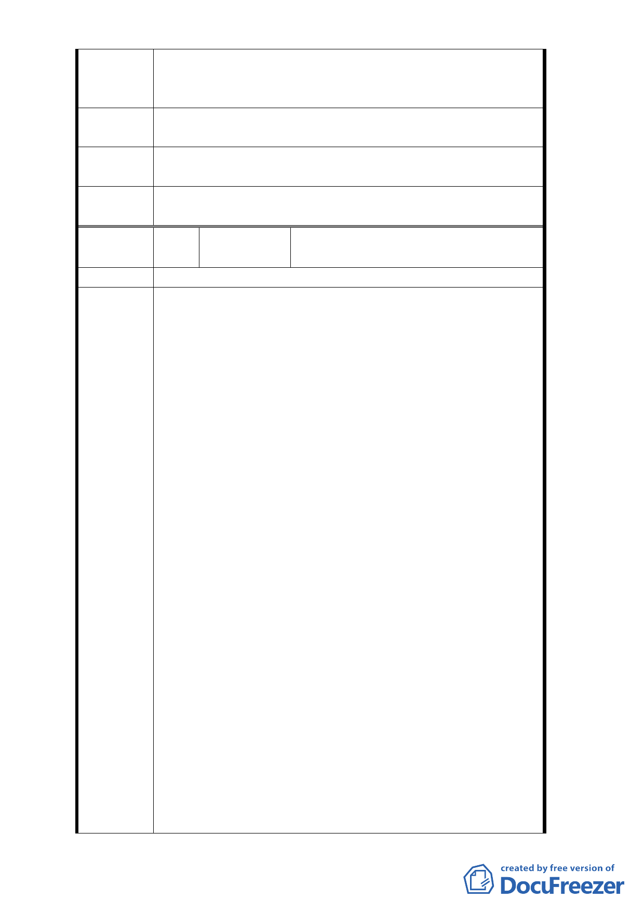

發能力。其實威京自始就無意願與「西北側地主」合建開
發所謂第二期基地。只是威京公司當初為其順利建造「京
華城」而矇騙市府及「西北側地主」的一場騙局而已。
建議辦法
請修訂本計畫案之開發限制，並刪除由威京公司主導開發
之規定。
擬建議處
理意見
同編號4回覆內容。
委
決
員
會
議
同編號1。
編 號8
陳情人
周○鈞（102.10.28 臺北市議員梁文傑
辦公室函轉）
陳情位置 松山區西松段三小段 182、183 地號
主旨：關於陳情人所有臺北市松山區西松段三小段 182、
183 地號等 2 筆土地受細部計畫規定須交特定之開發
公司以大街廓整體開發方式來規劃，其中涉本人財
產處分權益，至為不公，陳請儘速依都市計畫法相
關規定同意變更細部計畫解除整體開發。
說明：
一、旨揭土地位於「『修訂台北市土地使用分區（保護區
、農業區除外）計畫（通盤檢討案）』內有關八德路
四段、東寧路、縱貫鐵路、八德路四段 106 巷所圍
地區（原唐榮鐵工廠）土地使用計畫案」範圍內，
該計畫原規定須採取「大衛廓整體開發」，並由威京
公司整體開發。惟該計畫自民國 80 年公告以來，計
畫範圍內仍有旨揭範圍內土地尚未開發，其餘（京
陳情理由
華城購物中心）皆已依都市計畫開發完成。
二、旨揭土地地上物完成日期皆在民國 56 年～62 年間，
早已窳陋破舊不堪居住（如附件現況照片），且有結
構安全上的顧慮，若遇地震等天災，恐有隨時倒塌
造成公共安全危險與生命財產損失之虞。相關所有
權人為改善生活環境與避免災害發生，曾於民國 97
年申請建築執照（申請範圍為台北市松山區西松段
三小段 186、187、188、189、190、191 等 6 筆土地
），但貴管都市設計審議機關卻以受都市計晝規定大
街廓整體規劃及指定特定私人機構開發之限制，否
准受理建築執照申請。
三、經陳情人一再陳情，都委會始於 101 年 8 月 30 日第
637 次委員會對前揭都市計畫相關議題已研商做成
結論，建議：「本案都市計畫書規定「本案開發計畫
應由威京公司整體開發」，兩造當事人都已無意願，
- 61 -